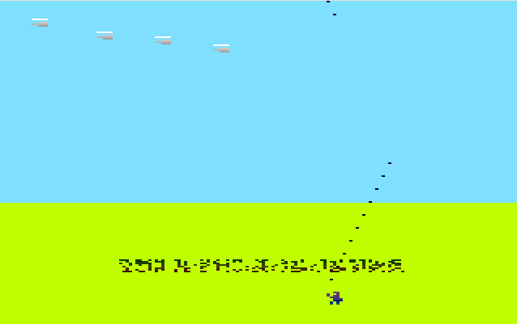
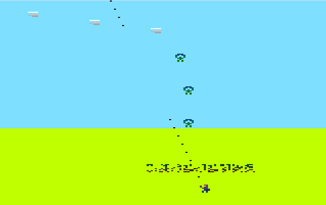

Land Me
This is a simple yet challenging game where you have to land a spaceship safely on a platform.
GitGub Get Source Code Get floppy image to boot
CloseGanja Farmer 512b
In this game, you are a farmer cultivating your crops while avoiding obstacles and challenges.
 
GitGub Get Source Code Get floppy image to boot
CloseFly Escape!
Fly Escape is a boot sector game developed by Krzysztof Krystian Jankowski ^ P1X, released version 1.0 on May 18, 2024. The game runs on Intel 386 processors in 16-bit real mode and features a simple yet engaging gameplay experience in a VGA 320x200x256 graphics mode. The objective of the game is to control a fly, avoid spiders, and collect flowers to advance through levels.
GitGub Get Source Code Get floppy image to boot
Close